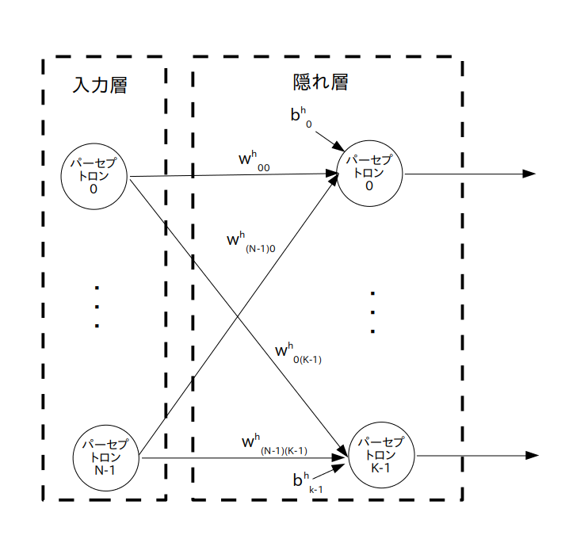

data : 入力信号、 1 x N 行列 (定数テンソル)

では前ページで説明した 3 層ニューラルネットワークのグラフを TensorFlow のデータフロー・グラフに変換してみましょう。
まず入力信号を考えます。
入力信号全体の名前を data とすると、今考えている 3 層ニューラルネットワークの入力層のパーセプトロンの個数は N 個でしたので、 data は 1xN 行列
\[ {\rm data} = \begin{bmatrix} d_{0}\ , & \cdots &, d_{(N-1)} \\ \end{bmatrix} \]
で表すことができます。
data の i 列目の値が入力層のパーセプトロン No.i に入力される信号になります。
よって TensorFlow では入力信号は図 1 の様に 1 x N 行列の定数テンソルで定義されます。
data : 入力信号、 1 x N 行列 (定数テンソル)
次に入力層を考えます。
前ページの図3から入力層だけを切り出したのが以下の図2です。
※ データフロー・グラフではなくて一般的なグラフ表現です

この様に、入力層は入力されたデータをそのままスルーして出力するだけなので、データフロー・グラフは図3の様になります。
入力信号 data をスルーして隠れ層にそのまま渡すだけ(つまり何もしない)

次に隠れ層を考えます。
前ページの図3から(入力層と)隠れ層を切り出したのが以下の図4です。
※ データフロー・グラフではなくて一般的なグラフ表現です
$w_{ij}^{\rm h}$ ・・・ 入力層のパーセプトロン No.$i$ の出力信号から、隠れ層のパーセプトロン No.$j$ への入力に掛けられる重み
$b_{j}^{\rm h}$ ・・・ 隠れ層のパーセプトロン No.$j$ のバイアス
隠れ層は K 個のパーセプトロンで出来ていて、それぞれのパーセプトロンは入力層からの出力信号を受取ります。
その際に重みが入力に掛けられ、更にバイアスが足されます。そして最後に活性化関数 $f()$ に通して出力されます。
さて入力層はニューラルネットワークへの入力信号をそのままスルーしてただけですので、入力層からの出力信号全体は 1xN 行列 \[ {\rm data} = \begin{bmatrix} d_{0}\ , & \cdots &,\ d_{(N-1)} \\ \end{bmatrix} \]
となります。
よって出力層のパーセプトロン No.$i$ から出力される信号は $d_i$ となりますので、隠れ層のパーセプトロン No.$j$ の出力 $y_j^{\rm h}$ は以下の式で表されます。
\[ y_j^{\rm h} = f \left ( \sum_{i=0}^{\rm N-1} \{w_{ij}^{\rm h}\cdot d_i\} + b_j^{\rm h} \right ) \ , \ (j=0,1,\cdots,{\rm K-1}) \]
次にこの式を行列の形に書き直します。
まず隠れ層の出力信号全体を表す行列を y_h とすると、y_h は 1xK 行列
\[ {\rm y\_h} = [y_0^{\rm h}\ , \cdots,\ y_{\rm K-1}^{\rm h}] \]隠れ層の重み全体を表す行列を w_h とすると、w_h は NxK 行列
\[ {\rm w\_h} = \begin{bmatrix} w_{00}^{\rm h}\ , & \cdots &,\ w_{\rm 0(K-1)}^{\rm h} \\ \vdots & \ddots & \vdots \\ w_{\rm (N-1)1}^{\rm h}\ , & \cdots &,\ w_{\rm (N-1)(K-1)}^{\rm h} \end{bmatrix} \]
隠れ層のバイアス全体を表す行列を b_h とすると、b_h は 1xK 行列
\[ {\rm b\_h} = [b_0^{\rm h}\ , \cdots,\ b_{\rm K-1}^{\rm h}] \]で表されます。
また活性化関数 $f()$ には色々な種類がありますが、今回の例では双曲線正接(tanh)関数を使いたいと思います。
よって隠れ層の出力信号は以下の行列演算で求められます。
なお ・ は行列積で、tanh(x) は行列の全ての要素に対して演算を行う事を意味します。
y_h = tanh( data・w_h + b_h )
ではこの行列演算を元に隠れ層をデータフロー・グラフ化してみましょう。
まず重みとバイアスは次のページでディープラーニングを実行する際に値が変化しますので、定数テンソルではなく変数テンソル として定義します(図5)。
w_h : 隠れ層の重み、 N x K 行列 (変数テンソル)
b_h : 隠れ層のバイアス、1 x K 行列 (変数テンソル)
※ w_h と b_h の各要素は乱数で初期化する

すると隠れ層は上で挙げた行列演算の式より図 6 のようなデータフロー・グラフになります。
入力層からの出力信号( = 入力信号) data と w_h の行列積 data・w_h を求め、それに b_h を足し、双曲線正接(tanh)に通して y_h に出力する
最後に出力層を考えます。
前ページの図3から(隠れ層と)出力層を切り出したのが以下の図4です。
※ データフロー・グラフではなくて一般的なグラフ表現です

$w_{ij}^{\textrm o}$ ・・・ 隠れ層のパーセプトロン No.$i$ の出力信号から、出力層のパーセプトロン No.$j$ への入力に掛けられる重み
$b_{j}^{\textrm o}$ ・・・ 出力層のパーセプトロン No.$j$ のバイアス
出力層は M 個のパーセプトロンで出来ていて、それぞれのパーセプトロンは隠れ層からの出力信号を受取ります。
その際に重みが入力に掛けられ、更にバイアスが足されます。
そして最後に活性化関数 $f()$ に通して出力されます。
つまりパーセプトロンの数と活性化関数が異なるだけで、出力層も隠れ層と同じ様な構造となります。
そこで出力層の重みとバイアスも変数テンソル として定義します(図8)。
今回はそれぞれ w_o と b_o という名前とします。
w_o : 出力層の重み、 K x M 行列 (変数テンソル)
b_o : 出力層のバイアス、1 x M 行列 (変数テンソル)
※ w_o と b_o の各要素は乱数で初期化する

出力層のデータフロー・グラフは図 9 となります。
なお次のページで詳しく説明しますが、今回は「多クラス分類問題」を扱う予定なので、活性化関数 $f()$ として softmax 関数を使います。
隠れ層からの出力信号 y_h と w_o の行列積 y_h・w_oを求め、それに b_o を足し、softmax 関数に通し、y_o に代入する

以上の各層のデータフロー・グラフを組み合わせると、3層ニューラルネットワーク全体では次のようなデータフロー・グラフとなります。
入力信号 data をネットワークに入力すると y_o が出力される

{kind=link}